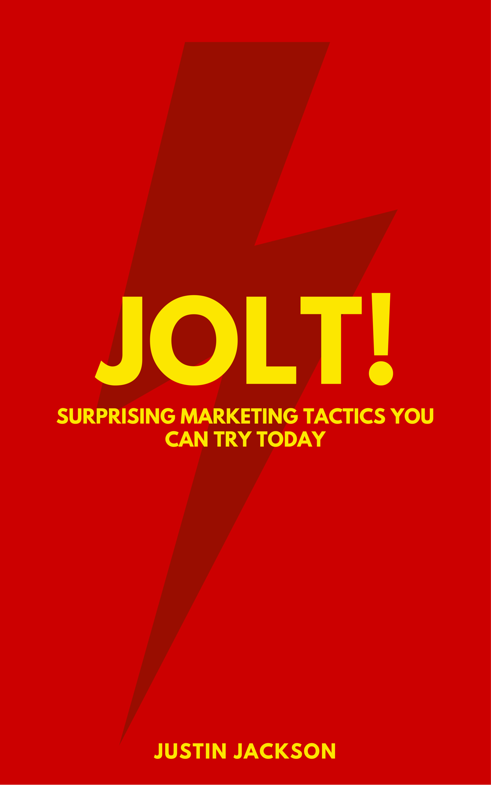

Sell more by
standing out.

A book for programmers, designers, freelancers, makers, and entrepreneurs.
ePub, Mobi, PDF formats
How do you get customers to know you exist?
The key to good marketing is stand out. You can't just imitate the same tired tactics everyone else is using. You need campaigns that are unique, interesting, and unexpected.
"Guerrilla marketing for the online world."
Jolt is full of creative marketing ideas you can try on your next project. It's based on my experience doing product marketing at Sprintly, MegaMaker, and helping launch dozens of other products.
Highly recommend @joltbook by @mijustin. No fluff, just actionable marketing tips. Can't wait to try them out when I launch @beerswift!
— Matt Netkow (@dotNetkow) August 1, 2016
This book has ideas for software developers, startups designers, writers, artists, and small businesses. If you sell something online, it's for you.
Who am I?

Hi! I'm Justin Jackson. You might know me from one of my podcasts (Product People, Build & Launch, MegaMaker)
I've done product marketing at two startups: Mailout.com and most recently at Sprintly.
In 2016 (after building up side-project revenue) I switched to building products full-time.
Here's a few of the other things I've launched (or helped launch): Network Effects, Remote Workers, Partyline, Product Press, and Levels Theme.
Frequently Asked Questions
How many pages is it?
156 pages PDF, 227 page ePub, 169 pages on Kindle
Email: words@nerdnorth.com
Twitter: @mijustin